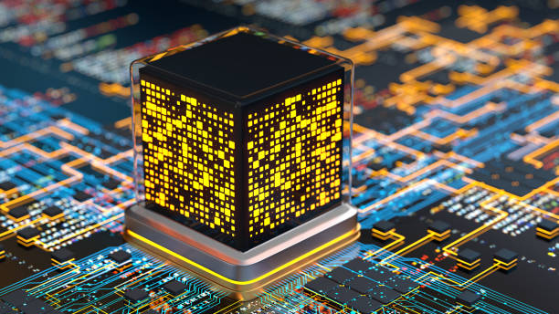

Distributor
About
Louie F. Abucay
Description: Quantum processors are a
revolutionary computing units that utilize
principles of quantum mechanics to perform
computations. Unlike classical processors, which
process data in binary bits (0 or 1), quantum
processors use quantum bits or qubits, which
can represent both 0 and 1 simultaneously due
to quantum superposition and entanglement.
Key Features:
Quantum Superposition: Qubits can exist in
multiple states simultaneously, enabling parallel
processing of information.
Quantum Entanglement: Qubits can be correlated
with each other, allowing for interconnected
processing and communication.
Massive Parallelism: Quantum processors can
perform computations on a massive scale due
to the simultaneous processing of multiple
states.
Applications: Quantum processors have potential
applications in cryptography, optimization
problems, drug discovery, and other fields
where traditional computers struggle with
complex calculations.
Impact: Quantum processors could revolutionize
various industries by solving problems that
are currently intractable for classical
computers, leading to advancements in
areas such as encryption, simulation, and
artificial intelligence.